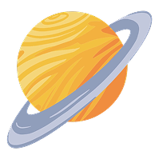

TODO SOBRE SATURNO 
Saturno es el sexto planeta desde el Sol y el segundo más grande del sistema solar, superado solo por Júpiter. Su rasgo más icónico son sus espectaculares anillos, compuestos por millones de partículas de hielo y roca que orbitan el planeta a distintas velocidades. Aunque otros planetas gigantes también tienen anillos, los de Saturno son, sin duda, los más extensos y brillantes.
Está formado principalmente por hidrógeno y helio, lo que lo convierte en un planeta gaseoso, sin una superficie sólida definida. Aun así, tiene un núcleo posiblemente rocoso y una atmósfera con poderosos vientos, tormentas y bandas nubosas que lo atraviesan. Un día en Saturno dura solo unas 10 horas, debido a su rápida rotación.
Saturno también es un verdadero imperio lunar: tiene más de 150 lunas confirmadas y muchas otras en estudio. Entre ellas, destaca Titán, una luna con atmósfera densa y lagos de metano líquido, y Encélado, que expulsa chorros de agua helada desde su interior, lo que lo convierte en un candidato intrigante en la búsqueda de vida.
A pesar de estar a más de 1.400 millones de kilómetros del Sol, Saturno ha sido observado desde la antigüedad y asociado con el dios romano del tiempo. Su influencia ha marcado no solo la astronomía, sino también el imaginario mitológico y simbólico de distintas culturas.